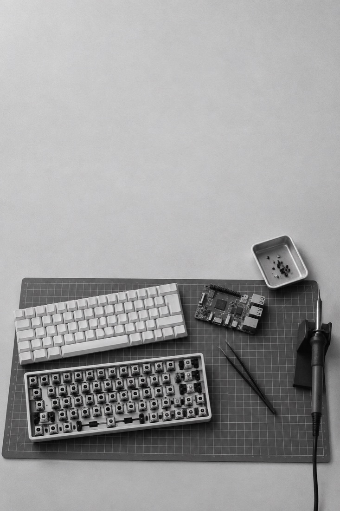

评测 2026-01-26 · 约 12 分钟
数码杂谈 | Kindle PaperWhite 3：为什么我推荐高中生使用电子书？
提要一台二手 Kindle PaperWhite 3 不只是阅读器：它陪我完成了高中阶段的阅读、背词和课件学习。
2020年，我闲着网上冲浪，在B站上看到了墨水屏的工作原理，惊叹于其墨水屏模拟纸质书的阅读质感，希望有一天能够拥有这样的一台设备。到了2024年，我在闲鱼以270元的价格淘到一台成色不错的Kindle PaperWhite 3，并一直使用至高考结束。
B · 霞鹜新致宋 + 霞鹜文楷
我是 Haoo，读历史，做起事来却像个工科生。想用科技把日子过得好一点。

图 06 关于
为自己真遇到的麻烦做的小工具，一格放一个。空着的格子是故意留的。
评测 2026-01-26 · 约 12 分钟
提要一台二手 Kindle PaperWhite 3 不只是阅读器：它陪我完成了高中阶段的阅读、背词和课件学习。
2020年，我闲着网上冲浪，在B站上看到了墨水屏的工作原理，惊叹于其墨水屏模拟纸质书的阅读质感，希望有一天能够拥有这样的一台设备。到了2024年，我在闲鱼以270元的价格淘到一台成色不错的Kindle PaperWhite 3，并一直使用至高考结束。